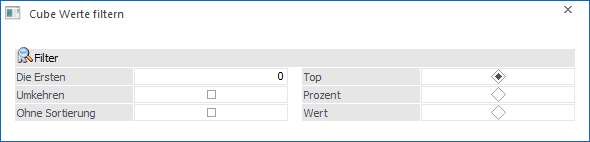
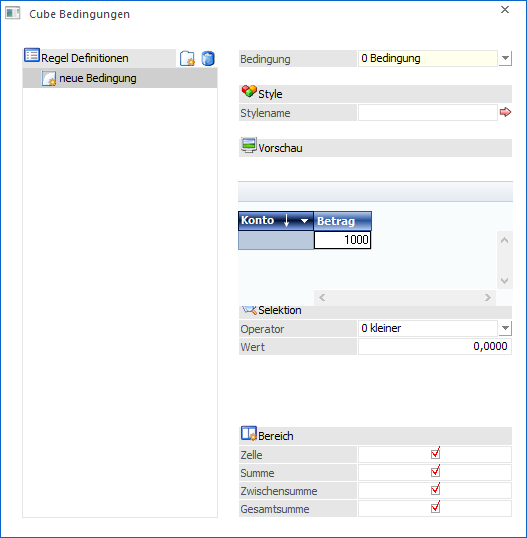

Folgende Funktionen stehen bei Measures über die rechte Maustaste zur Verfügung:
Ø Ausblenden
Wenn eine bestimmte Measure nicht mehr angezeigt werden soll, so kann diese ausgeblendet werden. Um die Measure wieder einzublenden, muss diese in den Fakten wieder aktiviert werden.
Ø Sortieren
Die Werte der Measure können nach Zeile oder nach Spalte aufsteigend sortiert werden.
Ø 1xN
Diese Funktion bietet die Möglichkeit die Werte der Measure in einer gekürzten Form darzustellen. Die Werte werden durch den ausgewählten Wert dividiert. Zur Auswahl stehen:
ü 1x1
ü 1x10
ü 1x100
ü 1x1000
Beispiel
Beträgt ein Wert der Measure z.B. 1.987.155,23 und es wird die Funktion 1x1000 aktiviert, so wird dieser Wert durch 1000 dividiert und nur noch mit 1.987,15 ausgegeben.
Ø Nachkommastellen
Es kann gewählt werden, wie viele Nachkommastellen angezeigt werden sollen. Dabei kann zwischen einer, zwei oder gar keiner Nachkommastelle gewählt werden. Sollte die Anzahl der Nachkommastellen bei den Styles definiert worden sein, so wir diese übersteuert.
Ø Formel
Bei Formel kann zwischen verschiedenen vorgefertigten Formeln gewählt werden und seine eigenen Formeln hinterlegt und editiert werden.
ü Laufende Summe
Es wird die
laufende Summe ermittelt
ü %_Summe
Es wird der Prozentwert
zur Summe gebildet
ü %_Zwischensumme
Es wird der
Prozentwert zur Zwischensumme gebildet
ü %_Gesamtsumme
Es wird der
Prozentwert zur Gesamtsumme gebildet
ü %_Abweichung
Es wird die
Abweichung in Prozent ermittelt. Es kann dabei aus allen hinterlegten Measures
gewählt werden
ü Summe
Es wird eine Summe
gebildet
ü Minimum
Ermittelt den
Minimalwert der Zeile
ü Maximum
Ermittelt den
Maximalwert der Zeile
ü Durchschnitt
Ermittelt den
Durchschnitt
ü
Durchschnittsabweichung
Ermittelt die Durchschnittsabweichung
ü Reihung auf
Es wird ein
aufsteigendes Reihung erstellt
ü Reihung ab
Es wird eine
absteigende Reihung erstellt
ü Erstellen
Wählt man "erstellen"
aus, öffnet sich der Formel Editor. Mittels Formel Editor können eigene Formeln
erstellt werden.
ü Editieren
Wählt man "editieren"
aus, öffnet sich der Formel Editor. Es wird die aktuelle Formel der Measure
geladen und kann beliebig geändert werden.
Ø Filter
Wählt man unter Filter den Punkt "Anlegen…" aus, so wird das Fenster "Cube Werte filtern" geöffnet.

In diesem Fenster kann mittels Radiobutton zwischen Top, Prozent und Wert gewählt werden.
ü Top
Wird der Radiobutton auf
Top gesetzt, so kann im Eingabefeld "die Ersten" die Anzahl der Datensätze die
Ausgegeben werden sollen definiert werden. Es wird dann ein Ranking erstellt,
das sich auf die erste Dimension der Zeile bezieht. Wird zusätzlich die Checkbox
"Umkehren" aktiviert, so werden nicht die besten x Datensätze, sondern die
schlechtesten X Datensätze angezeigt. Wenn die Werte nicht nach dem Ranking
sortiert werden sollen, so muss die Checkbox "Ohne Sortierung" aktiviert
werden.
ü Prozent
Handelt es sich bei dem
Wert um einen Prozentwert (z.B. durch eine Formel ermittelter Wert), so kann im
Filter nach einem Prozentwert größer X gefiltert werden. Es werden dann nur jene
Datensätze angezeigt, deren Wert größer als der angegebene Prozentwert ist.
Mittels Umkehren Button werden alle Datensätze angezeigt die kleiner als der
angegebene Prozentwert sind.
ü Wert
Wird der Radiobutton auf
Wert gesetzt, so kann im Eingabefeld "Wert >" ein entsprechender Wert
eingegeben werden. Es werden dann nur jene Werte angezeigt, die größer dem
eingegebenen Wert sind. Mittels Umkehren Button werden alle Datensätze angezeigt
die kleiner als der angegebene Wert sind.
ü Umkehren
Die aktive Checkbox
"Umkehren" bewirkt, dass nicht mehr die Besten X oder die größer X Datensätze
angezeigt werden, sondern die Schlechtesten X und die kleiner X Datensätze.
ü Ohne Sortierung
Aktiviert man
die Checkbox "Ohne Sortierung", so werden die Datensätze ohne bestimmter
Sortierung ausgegeben.
Hinweis
Wurde ein Filter ausgewählt, so wird bei der betroffenen Measure das Filter Symbol angezeigt.
Ø Styles
Wählt man Styles aus, so wird das Fenster "Cube Bedingungen" geöffnet.

Ø Regel Definition
Unter Regel Definition werden alle definierten Regeln angezeigt.
Ø Neu
Mittels Neu Button kann ein neuer Regeleintrag erzeugt werden
Ø Löschen
Mittels "Löschen Button" können bereits definierte Regeln gelöscht werden.
Ø Bedingungen
Im Cube Bedingungen Fenster können die Bedingungen für die Ampelfunktion hinterlegt werden. In der Drop Down stehen folgende Optionen zur Verfügung:
ü 0 - Bedingung
ü 1 - Standard
ü 2 - Bereich
ü 3 - Formel
Ø Selektion
Im Bereich Selektion können Operatoren und Werte definiert werden.
Ø Bereich
Bei Bereich kann mittels Checkbox definiert werden, ob es den Wert in der…
ü Zelle
ü Summe
ü Zwischensumme
ü Gesamtsumme
… betreffen soll.